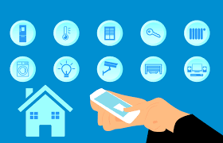

Understanding Network Security
In today's interconnected world, where everything from our smartphones to our gaming consoles relies on the internet, understanding network security is crucial. While computer security focuses on protecting individual devices and data, network security takes a broader approach, safeguarding the entire network infrastructure and the communication between devices. As a teenager navigating the digital landscape, it's essential to grasp the fundamentals of network security to stay safe online and protect your personal information.
What is Network Security?
Network security encompasses a range of measures designed to protect the integrity, confidentiality, and availability of data and resources within a network. It involves implementing protocols, technologies, and policies to prevent unauthorized access, mitigate threats, and detect and respond to security incidents. Network security aims to safeguard not only individual devices but also the interconnected systems and communication channels that make up the network.
Why is Network Security Important?
As a teenager, your online activities often involve interacting with various devices and services connected to the internet. From social media platforms to online gaming communities, you rely on networked technologies to stay connected and entertained. However, this interconnectedness also exposes you to potential security risks, such as:
- Unauthorized Access: Hackers may attempt to gain access to your devices or online accounts by exploiting vulnerabilities in the network.
- Data Breaches: Your personal information, including your name, address, and passwords, could be compromised in a network breach, leading to identity theft or fraud.
- Malicious Attacks: Malware, ransomware, and other forms of cyber threats can spread across networks, infecting devices and causing damage or data loss.
- Privacy Concerns: Without proper network security measures in place, your online activities and communications may be susceptible to interception or surveillance.
By understanding network security concepts and adopting safe online practices, you can minimize these risks and protect yourself from potential harm.
Tips for Enhancing Network Security
While many network security practices overlap with computer security, there are specific measures you can take to secure your online interactions and devices within a networked environment:
- Secure Your Home Network: Set up a strong and unique Wi-Fi password for your home network to prevent unauthorized access. Enable encryption protocols such as WPA2 or WPA3 to encrypt data transmitted over the network.
- Use Virtual Private Networks (VPNs): When accessing public Wi-Fi networks or browsing the internet, use a VPN to encrypt your internet traffic and protect your privacy. VPNs create a secure tunnel between your device and the internet, shielding your data from prying eyes.
- Practice Safe Browsing Habits: Be cautious when clicking on links or downloading files from unknown or suspicious websites. Use reputable antivirus software to scan for and remove malware or other malicious software.
- Be Mindful of Social Engineering Attacks: Be wary of unsolicited emails, messages, or phone calls that request personal information or urge you to click on links. These could be phishing attempts designed to trick you into revealing sensitive data or installing malware.
- Update Your Devices Regularly: Keep your devices, including smartphones, computers, and gaming consoles, up to date with the latest security patches and software updates. Regular updates help patch known vulnerabilities and improve the overall security of your devices.
By implementing these network security best practices and staying informed about emerging threats, you can enjoy a safer and more secure online experience.
 Image by pxhere.comSecurity awareness game
Welcome to the Network Security Challenge, where you'll navigate through a series of scenarios to assess whether they are safe or potentially dangerous. In this tutorial, you'll encounter a mix of safe and risky situations commonly encountered online. Let's begin!